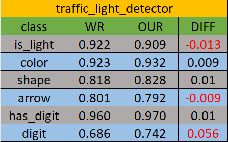
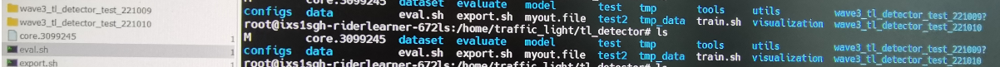
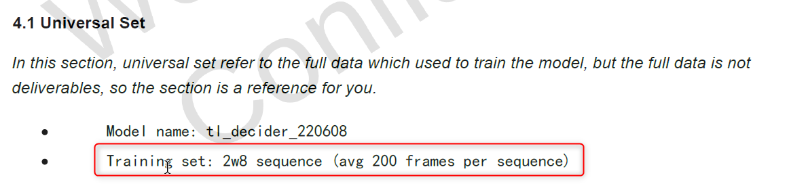
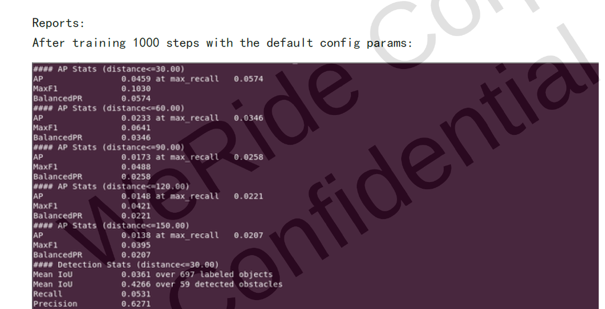
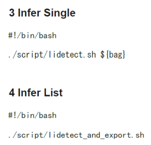

95_WR_MS2(T0+3) Checks
|
|
Module |
MS2 update content |
Existing problem |
Acceptance conclusion |
|
Python model training related code |
LaneNet |
none |
none |
MS2 does not accept acceptance, passed by default |
|
BVNet |
none |
none |
MS2 does not accept acceptance, passed by default |
|
|
CarNet |
none |
none |
MS2 does not accept acceptance, passed by default |
|
|
ImageODD |
none |
none |
MS2 does not accept acceptance, passed by default |
|
|
Multi-Task |
1. Supplementary semantic segmentation data set 2. Adjust training strategy, etc. |
The number of reappearances fluctuates, MS3 needs to ensure that points can be reproduced |
Conditions pass |
|
|
Traffic Light |
detector Increase |
1. The document still needs to be further corrected (the path in the image and user_manual Mismatch ) 2. The amount of data explained in the UNIVERSAL SET acceptance document does not match the amount of data provided in actual available 3. How does the Detector and Decision models string up? 4. Performance points are floating, MS3 requires strict requirements for performance and reproduction |
Conditions pass (there is still a problem with the details, WR promises that MS3 is completely resolved) |
|
|
Traffic Sign |
Increase |
Delivery code part and the design doc provided by MS1 are involved |
Conditions pass (MS3 rectification documentation problem) |
|
|
Liper |
C ++ code |
Documents and actual delivery are large. |
Conditions pass (MS3 rectification documentation problem) |
|
|
MOT |
Increase |
|
Conditions pass (WR promise MS3 provided) |
|
|
AOS engineering deployment C ++ code |
ALL |
Increase |
|
Fail |
Common Issue（Important）:
Mirror management, the mirror can be found in the first round, and the second round of acceptance cannot be found.IntersectionIntersection
The document delivered cannot allow newcomers to accept from scratch.
---------------------------------------------- 分割线20220930 -------------------------------------------------------------------------------------------------------------------------------------------------------------------------------------------------------------------------------------------------------------------------------------------------------—
Notes:
This page is only for pure algorithm acceptance
This acceptance is the second round of acceptance, according to the latest feedback increase in the WR_20220919 (mainly Readme document)
LaneNet → P
Wen Haoran
Yan Cheng
BvNet → P
Deng Zhonghao
Zhu Xuanyu
CarNet → P
Li Chen
Chen Wenhui
ImageODD → P
Yang Junyan
TrafficLight -> Y
Shang Yan
Xia Sijun
[GM problem] The path in the mirror and user_manual Mismatch 。
detector：
【in conclusion】 MS2 passes
【index】

[Question] The newly saved folder of Train will have the symbol of "?".

decider：
【in conclusion】 MS2 does not pass
【reason】
The amount of data is not consistent
The amount of data explained in the UNIVERSAL SET acceptance document does not match the amount of data provided in actual available
|
The amount of data explained in the documentation |
Actual data amount |
|
 |
training set: 4252 sequence |
The indicator is within the range of normal fluctuations:
UNIVERSAL SET can be normal and evacuate normally. This problem has appeared in the previous round and has not been resolved ), Modify the data reading method in the code to be normal, run normally, Index 0.795 (User_Manual) VS 0.790 (OUR TEST) 。
Universal set index 0.939(user_manual) vs 0.925(Our test) , But as mentioned above, the amount of data is not aligned, so the indicator is not meaningful.
TrafficSign -> Y
Wang Cong
in conclusion: MS2 code acceptance cannot be passed 。
Model indicator: DEMO dataset model Verification indicator passes (Self -testing and WR providing indicators are within 0.1%).
Reasons: Delivery code section and the design doc provided by MS1 are involved (the final convolutional layer of the model in the design doc. However, the MS2 delivery code model finally uses the FC classification result).
Measures: The WR classmates need to update the design doc to maintain the consistency of the delivery code and the design document.
Liper -> Y
Cheng Changhao
Bi Yanguang
Lai Chuanbin
Liper3D
in conclusion: MS2 acceptance is conditional, and WR needs to carefully organize and modify the documents.
Model accuracy: accuracy is similar to the results provided by WR, and the model acceptance passes
Existing problems: Documents and actual delivery are large, and the problems in the documentation have not been corrected.
Existing Problems ：
1. The new documentation this time The previous problems have not been refreshed at all EssenceThe acceptance index provided in the previous document is an error indicator, which has no reference value at all, so WR provides indexes for acceptance.This round of document updates have not been modified before the previous error indicators.
As shown in the figure below, the accuracy of the model when the document provides 1000Steps, but the indicators such as MAP = 0.0459 in the 30m range do not have any reference significance.

2. In the document, the relevant commands and actual use in the document exist in and out
As shown below: The actual effective command during actual reasoning is ./script/lidetect.sh does not require any external command line parameters, and there are differences from the two commands provided in the document.But the document was not pointed out.

Liper_Curb
in conclusion: MS2 acceptance cannot be passed
For no reason: No CURB -related acceptance indicators are found, and WR needs to be given.
Lai chuanbin: 1. The indicators of the reappearance result are completely different from the indicators in User Manual. It should be that the indicators in User Manual have not been updated and require WR updates;
2. The document does not explain the meaning of various indicators, and no CURB -related indicators are found in the reappearance results and documents, and WR explanation is required;
Cheng Changhao: No Curb precision related indicators were found.
Liperodd (optional: black box)
in conclusion: Can't find LIPERODD delivery content, it cannot be accepted
Multi-Task -> P
Ma JinFeng
Sun Yangyang
MOT -> Y
Xia Sijun
Existence
At present, this Module does not have corresponding acceptance standards and needs to be supplemented with data and indicators.→ WR 20221013: WR intends to use the Persim tool to accept it based on MS3
The user_manual description document is required. Look at the C ++ code alone (basically no annotation), and it is difficult for newcomers to understand. → WR 20221013: WR will add User_manual DD: 13 OCT 2022
At present, the main location information is used to predict Kalman. Can detecting volatility (Location is not allowed+long -term missed inspection) can it be effectively solved?
10. AOS compile environmental problems: → y
Q1: Some ERRORs appearing in the integration of WR AOS compilation environment and bosch AOS compilation environment. It is currently suspected that it may be the problem
→ WR 20221013: You need to install NVD Docker, Need PMT Support DUAN Yuanjiao (XC-AS/PJ-WIN-SWA1)

Q2: Although WR colleagues provide a separate JSON file, we cannot directly quote this JSON when performing some SCAN tools, mainly to compile the dependent path problem. I hope WR can give us a training and guide how to generate JSON under the guidance.
→ escalation needed from project level
OPL:
Organize meetings to talk about LIPER C ++ and Mot Post-Proces technologies for details user-2f3e3 @yin cangqiong
Organize the meeting to talk about MS3 delivery scope user-2f3e3 @Yin cangqiong